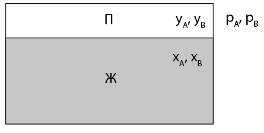
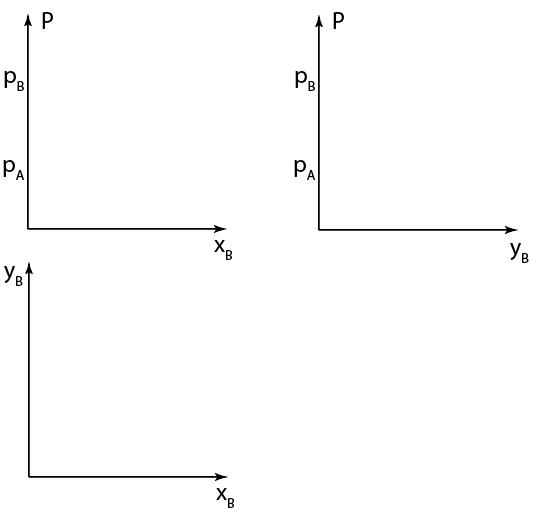
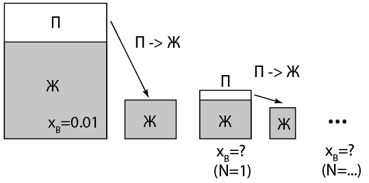
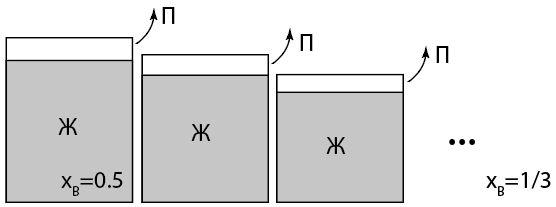

Y21 (2021) — English translation
The saturated vapor pressure above the surface of a mixture of two ideally miscible liquids ($A$) and ($B$) obeys Raoult’s law: $$ P_A=p_A x_A\\ P_B=p_B x_B, $$ где $p_A$, $p_B$ – давления насыщенных паров чистых жидкостей $A$ и $B$, $x_A$ и $x_B$ – молярные доли компонент жидкости в смеси ($x_A+x_B=1$).

The pressure of saturated vapor above the surface of a pure liquid depends on temperature. This dependence can be restored by considering the Carnot cycle, where a two-phase liquid-vapor system is used as a working fluid.

In a two-component system of two liquids with $p_B=2 p_A$, at the initial moment $x_B=0.01$. The vapor above the liquid is collected and condensed isothermally.
After the first condensation, the volume of the vessel is isothermally increased slightly so that saturated steam again appears in a small volume, this steam is collected and the procedure is repeated $N$ times.

In a two-component system of two liquids with $p_B=2 p_A$, at the initial moment $x_B=0.5$. At the initial moment, the volume of the vessel is only slightly larger than the volume of the liquid, then the vapor above the surface of the liquid is slowly pumped out, and the volume of the vessel is reduced so that the volume of the vapor is always much less than the volume of the liquid. During the entire process, the temperature $T$ remains constant. The molar densities of the mixed liquids are considered equal. After a long time, the mole fraction of liquid $B$ in the mixture reached $x_B=1/3$.

Source: https://pho.rs/p/239